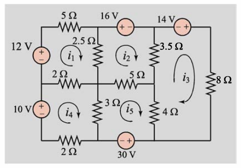

import numpy as np
def metodo(A, b, x0, tol=1e-6, max_iter=100):
n = len(A)
x = x0.copy()
for iter_count in range(max_iter):
x_new = np.zeros(n)
for i in range(n):
s = np.dot(A[i, :i], x[:i]) + np.dot(A[i, i+1:], x[i+1:])
x_new[i] = (b[i] - s) / A[i, i]
if np.linalg.norm(x_new - x) < tol:
return x_new
x = x_new
raise Exception("El método no converge después de {} iteraciones".format(max_iter))Taller de repaso parcial
Escriba un pseudocódigo usando LU con pivotiamiento para encontrar la inversa de un matriz \(A\), suponiendo que la matriz es invertible.
Realice una tabla comparativa para los siguientes métodos escribiendo, ventajas, desventajas, cuando se debe usar, cuando se debe evitar cuando es su convergencia. LU con y sin pivotiamiento, Cholescky, Jacobi y Gauss-seidell
Explique que es numero de condición y por que es importante.
Resuelva el siguiente sistema de ecuaciones, \[\begin{bmatrix} 10^{-20} & 1 \\ 1 & 2 \end{bmatrix} \begin{bmatrix} x_1 \\ x_2 \end{bmatrix} = \begin{bmatrix} 1 \\ 4 \end{bmatrix}\]
Usando factorización LU con y sin pivoteo. Recuerde que computacionalmente \(1+10^{-20} = 1\) y \(2-10^{20} = -10^{20}\).
Analice el residuo generado por el sistema de ecuaciones anterior. ¿Es grande o pequeño? ¿Es un buen indicador de la solución? Encuentre la solución exacta el error absoluto. Realice este procesos usando las normas 1, 2 y \(\infty\).
Porque es importante usar pivoteo en la factorización LU para resolver sistemas de ecuaciones. De ejemplos.
Las corrientes \(i_1,i_2,i_3,i_4\) y \(i_5\) en el circuito puede ser determinado
desde la solución del sistema de ecuaciones (obtenido aplicando la ley de Kirchhoff)
\[\begin{equation} \begin{split} 9.5i_1-2.5i_2-2i_4=12,\\ -2.5i_1+11i_2-3.5i_3-5i_5=-16,\\ -3.5i_2+15.5i_3-4i_5=14,\\ -2i_1+7i_4-3i_5=10,\\ -5i_2-4i_3-3i_4+12i_5=-30. \end{split} \end{equation}\]

que método es el mas adecuado para resolver este sistema de ecuaciones?. Justifique su respuesta.
- Comente cada línea del siguiente código que corresponde a algún método de solución de sistemas de ecuaciones. ¿A qué método corresponde?
- Sea el siguiente sistema de ecuaciones lineales \[\begin{bmatrix} 2 & 1 & 0 &\cdots &0&0&0\\ 1 & 2 & 0 &\cdots &0&0&0 \\ 0 & 1 & 2 &\cdots &0&0&0\\ \vdots & \vdots & \vdots &\ddots &\vdots&\vdots &\ddots &\vdots\\ 0 & 0 & 0 &\cdots &2&1&0\\ 0 & 0 & 0 &\cdots &1&2&1\\ 0 & 0 & 0 &\cdots &0&1&2\\ \end{bmatrix}\begin{bmatrix} x_1 \\ x_2 \\ x_3\\ \vdots\\x_{n-2}\\x_{n-1}\\ x_n\end{bmatrix}=\begin{bmatrix} b_1 \\ b_2 \\ b_3\\ \vdots\\ b_{n-2}\\b_{n-1}\\ b_n\end{bmatrix}\]
¿Cuales métodos se podrian usar para resolver este sistema de ecuaciones y por que?. ¿Qué método es el mas adecuado para resolver este sistema de ecuaciones? ¿Justifique su respuesta?
- Sea la siguiente matriz
\[\begin{bmatrix}1&2&3\\4&5&6\\7&8&9\end{bmatrix}\]
- Encuentre las normas 1, 2 y \(\infty\) de la matriz.
- Encuentre el polinomio interpolante de Lagrange para los siguientes puntos
\[(-1,1),\quad (0,0),\quad (1,1),\quad (2,0),\quad (3,1)\]
A=np.loadtxt("matrix2.txt")
Aarray([[1. , 0.5 , 0.33333333, 0.25 , 0.2 ,
0.16666667, 0.14285714, 0.125 , 0.11111111, 0.1 ,
0.09090909, 0.08333333, 0.07692308, 0.07142857, 0.06666667],
[0.5 , 0.33333333, 0.25 , 0.2 , 0.16666667,
0.14285714, 0.125 , 0.11111111, 0.1 , 0.09090909,
0.08333333, 0.07692308, 0.07142857, 0.06666667, 0.0625 ],
[0.33333333, 0.25 , 0.2 , 0.16666667, 0.14285714,
0.125 , 0.11111111, 0.1 , 0.09090909, 0.08333333,
0.07692308, 0.07142857, 0.06666667, 0.0625 , 0.05882353],
[0.25 , 0.2 , 0.16666667, 0.14285714, 0.125 ,
0.11111111, 0.1 , 0.09090909, 0.08333333, 0.07692308,
0.07142857, 0.06666667, 0.0625 , 0.05882353, 0.05555556],
[0.2 , 0.16666667, 0.14285714, 0.125 , 0.11111111,
0.1 , 0.09090909, 0.08333333, 0.07692308, 0.07142857,
0.06666667, 0.0625 , 0.05882353, 0.05555556, 0.05263158],
[0.16666667, 0.14285714, 0.125 , 0.11111111, 0.1 ,
0.09090909, 0.08333333, 0.07692308, 0.07142857, 0.06666667,
0.0625 , 0.05882353, 0.05555556, 0.05263158, 0.05 ],
[0.14285714, 0.125 , 0.11111111, 0.1 , 0.09090909,
0.08333333, 0.07692308, 0.07142857, 0.06666667, 0.0625 ,
0.05882353, 0.05555556, 0.05263158, 0.05 , 0.04761905],
[0.125 , 0.11111111, 0.1 , 0.09090909, 0.08333333,
0.07692308, 0.07142857, 0.06666667, 0.0625 , 0.05882353,
0.05555556, 0.05263158, 0.05 , 0.04761905, 0.04545455],
[0.11111111, 0.1 , 0.09090909, 0.08333333, 0.07692308,
0.07142857, 0.06666667, 0.0625 , 0.05882353, 0.05555556,
0.05263158, 0.05 , 0.04761905, 0.04545455, 0.04347826],
[0.1 , 0.09090909, 0.08333333, 0.07692308, 0.07142857,
0.06666667, 0.0625 , 0.05882353, 0.05555556, 0.05263158,
0.05 , 0.04761905, 0.04545455, 0.04347826, 0.04166667],
[0.09090909, 0.08333333, 0.07692308, 0.07142857, 0.06666667,
0.0625 , 0.05882353, 0.05555556, 0.05263158, 0.05 ,
0.04761905, 0.04545455, 0.04347826, 0.04166667, 0.04 ],
[0.08333333, 0.07692308, 0.07142857, 0.06666667, 0.0625 ,
0.05882353, 0.05555556, 0.05263158, 0.05 , 0.04761905,
0.04545455, 0.04347826, 0.04166667, 0.04 , 0.03846154],
[0.07692308, 0.07142857, 0.06666667, 0.0625 , 0.05882353,
0.05555556, 0.05263158, 0.05 , 0.04761905, 0.04545455,
0.04347826, 0.04166667, 0.04 , 0.03846154, 0.03703704],
[0.07142857, 0.06666667, 0.0625 , 0.05882353, 0.05555556,
0.05263158, 0.05 , 0.04761905, 0.04545455, 0.04347826,
0.04166667, 0.04 , 0.03846154, 0.03703704, 0.03571429],
[0.06666667, 0.0625 , 0.05882353, 0.05555556, 0.05263158,
0.05 , 0.04761905, 0.04545455, 0.04347826, 0.04166667,
0.04 , 0.03846154, 0.03703704, 0.03571429, 0.03448276]])A